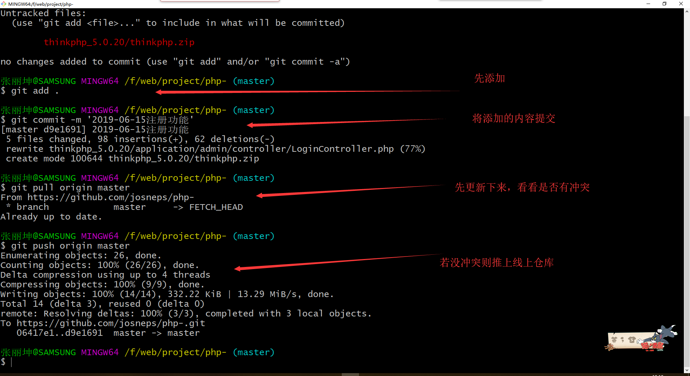

Personal summary
网络攻击分类（五类）
一:被动攻击
被动攻击是对信息的保密性进行攻击，窃取信息的来源以及数据，对信息加以查看。主要的攻击方式有窃听，嗅探等。对被动攻击采取的防范措施应该是阻止而不是检测。比如进行数据加密。二：主动攻击
主动攻击是指攻击信息来源的真实性，数据传输的完整性以及系统服务的可用性。对截取的信息进行修改，添加或删除等操作。主要的攻击方式有欺骗，重放，假冒，拒绝服务和消息篡改等方式，对主动攻击采取的防范措施为数据检测,防火墙等。三：内部人员攻击
内部人员攻击指有的人授权在信息安全处理系统物理范围内或有直接访问内部安全信息处理系统的权限，可进行攻击四：物理临近攻击
指未授权者在物理上临近网络,系统或设备，目的为修改，收集信息或拒绝为用户服务五：分布攻击
指在硬件或软件在开发出来以后和被安装之前，或当其从一个地方转移到另一个地方之前，可进行攻击（修改软硬件）获取当天的开始时间及结束时间
$beginToday=mktime(0,0,0,date('m'),date('d'),date('Y'));$endToday=mktime(0,0,0,date('m'),date('d')+1,date('Y'))-1;
获取昨天的开始时间及结束时间
$beginYesterday=mktime(0,0,0,date('m'),date('d')-1,date('Y'));$endYesterday=mktime(0,0,0,date('m'),date('d'),date('Y'))-1;
获取近七天的时间戳
$sevenDays = strtotime('-7 days');$now = time();
获取本月的开始时间及结束时间
$beginThismonth=mktime(0,0,0,date('m'),1,date('Y'));$endThismonth=mktime(23,59,59,date('m'),date('t'),date('Y'));
获取上个月的开始时间及结束时间
$begin_time = strtotime(date('Y-m-01 00:00:00',strtotime('-1 month')));$end_time = strtotime(date("Y-m-d 23:59:59", strtotime(-date('d').'day')));
电商网站后台九大功能模块详解
随着电子商务的发展，网上购物正在趋于一种时尚，电子商务网站也逐渐成为企业顺应潮流的标配。大多数人知道可能在电子商务网站前端有查询，注册登录，购物车等等功能。可是您知道建设电子商务网站后台功能模块都有哪些么?今天我们就聊聊电商网站后台功能模块的那些事。
电子商务网站整个系统的后端管理，按功能划分为九大模块，包括商品组织管理、订单处理、内容发布管理等模块。
一、后台主页：
各类主要信息的概要统计，包括客户信息、 订单信息、商品信息、库存信息、评论和最近反馈等。二、商品模块：
1.商品管理：商品和商品包的添加、修改、 删除、复制、批处理、商品计划上下架、SEO、商品多媒体上传等，可以定义商品是实体还是虚拟，可以定义是否预订、是否缺货销售等。2.商品目录管理：树形的商品目录组织管理，并可以设置关联/商品推荐。
3.商品类型管理：定义商品的类型，设置自定义属性项、SKU项和商品评论项。
4.品牌管理：添加、修改、删除、上传品牌 LOGO。
5.商品评论管理：回复、删除。
三、销售模块：
1.促销管理：分为目录促销、购物车促销和 优惠券促销三类，可以随意定义不同的促销规则，满足日常促销活动：购物折扣、购物赠送积分、购物赠送优惠券、购物免运输费、特价商品、特定会员购买特定商品、折上折、买二送一等。2.礼券管理：添加、发送礼券
3.关联/推荐管理――基于规则引擎，可以支持多种推荐类型，可手工添加或者自动评估商品。
四、订单模块：
1.订单管理：可以编辑、解锁、取消订单、 拆分订单、添加商品、移除商品、确认可备货等，也可对因促销规则发生变化引起的价格变化进行调整。订单处理完可发起退货、换货流程。2.支付：常用于订单支付信息的查看和手工 支付两种功能。手工支付订单，常用于“款到发货”类型的订单，可理解为对款到发货这类订单的一种补登行为。
3.结算：提供商家与第三方物流公司的结算 功能，通常是月结。同时，结算功能也是常用来对“货到付款”这一类型订单支付后的数据进行对帐
五、库存模块：
1.库存管理：引入库存的概念，不包括销售 规则为永远可售的商品，一个SKU对应一个库存量。库存管理提供增加、减少等调整库存量的功能;另外，也可对具具体的SKU设置商品的保留数量、***小库存量、再进货数量。每条SKU商品的具体库存操作都会记录在库存明细记录里边。2.查看库存明细记录。
3.备货/发货：创建备货单、打印备货单、打印发货单、打印EMS快递单、完成发货等一系列物流配送的操作。
4.退/换货：对退/换货的订单进行收货流程的处理。
六、内容模块：
1.内容管理：包括内容管理以及内容目录管理。内容目录由树形结构组织管理。类似于商品目录的树形结构，可设置目录是否为链接目录。2.无限制创建独立内容网页，比如关于我们，联系我们。
3.广告管理：添加、修改、删除、上传广告、 定义广告有效时限。
4.可自由设置商城导航栏目以及栏目内容、栏目链接。
七、客户模块：
1.客户管理：添加、删除、修改、重设密码、 发送邮件等。2.反馈管理：删除、回复。
3.消息订阅管理：添加、删除、修改消息组 和消息、分配消息组、查看订阅人。
4.会员资格：添加、删除、修改。
八、系统模块：
1.安全管理：管理员、角色权限分配和安全日志2.系统属性管理：用于管理自定义属性。可关联模块包括商品管理、商品目录管理、内容管理、客户管理。
3.运输与区域：运输公司、运输方式、运输 地区。
4.支付管理：支付方式、支付历史。
5.包装管理：添加、修改、删除。
6.数据导入管理：商品目录导入、商品导入、 会员资料导入。
7.邮件队列管理：监控邮件发送情况，删除 发送异常邮件。
九、报表模块：
缺省数个统计报表，支持时间段过滤、支持按不同状态过滤、支持HTML、PDF和Excel格式的导出和打印。1.用户注册统计
2.低库存汇总
3.缺货订单
4.订单汇总
5.退换货
MySQL数据库
主从复制
1.MySQL 主从复制概念：
MySQL 主从复制是指数据可以从一个MySQL数据库服务器主节点复制到一个或多个从节点。MySQL 默认采用异步复制方式，这样从节点不用一直访问主服务器来更新自己的数据，数据的更新可以在远程连接上进行，从节点可以复制主数据库中的所有数据库或者特定的数据库，或者特定的表。2.MySQL 主从复制主要用途：
读写分离，在开发工作中，有时候会遇见某个sql 语句需要锁表，导致暂时不能使用读的服务，这样就会影响现有业务，使用主从复制，让主库负责写，从库负责读，这样，即使主库出现了锁表的情景，通过读从库也可以保证业务的正常运作。3.架构扩展
随着系统中业务访问量的增大，如果是单机部署数据库，就会导致I/O访问频率过高。有了主从复制，增加多个数据存储节点，将负载分布在多个从节点上，降低单机磁盘I/O访问的频率，提高单个机器的I/O性能。4.MySQL 主从复制原理
MySQL主从复制涉及到三个线程，一个运行在主节点（log dump thread），其余两个(I/O thread, SQL thread)运行在从节点；大白话：
mysql要做到主从复制，其实依靠的是二进制日志，即：假设主服务器叫A，从服务器叫B；主从复制就是B跟着A学，A做什么，B就做什么。那么B怎么同步A的动作呢？现在A有一个日志功能，把自己所做的增删改查的动作全都记录在日志中，B只需要拿到这份日志，照着日志上面的动作施加到自己身上就可以了。这样就实现了主从复制。总结：
Mysql 主从复制是mysql 高可用，高性能的基础，有了这个基础，mysql 的部署会变得简单、灵活并且具有多样性，从而可以根据不同的业务场景做出灵活的调整。数据表结构设计
索引定义
索引是由数据库表中一列或者多列组合而成，其作用是提高对表中数据的查询速度，建立索引查询速度有数量级提升 ；类似于图书的目录，方便快速定位，寻找指定的内容；
索引的优缺点
优点：提高查询数据的速度；缺点：创建和维护索引的时间增加了；
MySQL优化（索引，分表，SQL优化，）：
MySQL Key值（PRI, UNI, MUL）的含义：PRI主键约束、UNI唯一约束、MUL可以重复。索引分类
1.添加PRIMARY KEY（主键索引）
mysql>ALTER TABLE `table_name` ADD PRIMARY KEY ( `column` )2.添加UNIQUE(唯一索引)
mysql>ALTER TABLE `table_name` ADD UNIQUE (`column`)3.添加INDEX(普通索引)
mysql>ALTER TABLE `table_name` ADD INDEX index_name ( `column` )4.添加FULLTEXT(全文索引)
mysql>ALTER TABLE `table_name` ADD FULLTEXT (`column`)5.添加多列索引
mysql>ALTER TABLE `table_name` ADD INDEX index_name ( `column1`, `column2`, `column3` )mysql连接池：
大量应用中的重复模块会带来大量的访问，而每个应用与数据库的连接，一般是使用数据库的连接池，这个连接池的资源一般是不释放且一直保留着。假设连接池中有10个连接，中一个数百的服务器集群中，就占用了数据库1000个连接。数据库中的每个连接都是十分珍贵的资源，在资源有限的情况下，这里被占用了，其他能用的资源就少了。软件优化：
1）正确使用MyISAM和InnoDB存储引擎2）正确使用索引
3）避免使用 select *
4）字段尽可能的设置 非NULL
硬件优化：
1）增加物理内存2）增加应用缓存
3）使用SSD硬盘
架构优化：
1）分表2）读写分离
3）分库（把一张表的数据分别存储在不同的数据库，可用MyCat实现，MyCat，关系型数据库分布式处理软件）。MyCat以代理服务器的形式位于App服务器和后台数据库之间，对外开放的接口是MySQL通信协议，将App服务器传过来的sql语句按照路由的规则拆解转发到不同的后台数据库，并把结果汇总返回。
选择合适的消息队列软件：
1.当后台系统发现完成某些小任务需要花费很多时间，而且迟点晚成也不影响整个任务的完成进度时，就会把这些小任务交给消息队列。例如发送邮件、短信、推送消息等任务都非常适合在消息队列中处理。2.把这些任务放在消息队列中，可加快App后台请求都响应时间。同时消息队列也能把大量的并发请求变成串行的请求，来减轻服务器的负担。常见的消息队列软件有：
| 消息队列软件 | 说明 |
| RabbitMQ | 重量级，适合企业级的开发，自带Web监控界面，方便监控队列的情况 |
| Redis | 轻量级，是一个key-value系统，但是也支持消息队列这种数据结构，App后台中Redis被广泛使用 |
| ZeroMQ | 号称最快，尤其针对大吞吐量的需求场景 |
| ActiveMQ | Apache的一个子项目，能够以代理人和点对点的技术实现队列 |
使用分布式服务实现业务的复用
1.随着业务不断增加，后台系统由一个单一应用膨胀为一个巨无霸系统，系统中聚合了大量的应用和服务，各个模块之间有很多功能重复实现（例如登录模块），造成了开发、运维、部署的麻烦。2.大量应用中的重复模块会带来大量的访问，而每个应用与数据库的连接，一般是使用数据库的连接池，这个连接池的资源一般是不释放且一直保留着。假设连接池中有10个连接，中一个数百的服务器集群中，就占用了数据库1000个连接。数据库中的每个连接都是十分珍贵的资源，在资源有限的情况下，这里被占用了，其他能用的资源就少了。
sql语句执行顺序
(1)from(3) join
(2) on
(4) where
(5)group by(开始使用select中的别名，后面的语句中都可以使用)
(6) avg,sum....
(7)having
(8) select
(9) distinct
(10) order by
SQL语句基础
MySQL缓存
命中条件
缓存存在一个hash表中，通过查询SQL，查询数据库，客户端协议等作为key,在判断命中前，mysql不会解析SQL，而是使用SQL去查询缓存，SQL上的任何字符的不同，如空格，注释，都会导致缓存不命中。如果查询有不确定的数据like now(),current_date()，那么查询完成后结果者不会被缓存，包含不确定的数的是不会放置到缓存中。工作流程
1.服务器接收SQL，以SQL和一些其他条件为key查找缓存表2.如果找到了缓存，则直接返回缓存
3.如果没有找到缓存，则执行SQL查询，包括原来的SQL解析，优化等。
4.执行完SQL查询结果以后，将SQL查询结果缓存入缓存表
mysql缓存：一级缓存和二级缓存
一级缓存：
也称本地缓存，sqlSession级别的缓存。一级缓存是一直开启的；与数据库同一次回话期间查询到的数据会放在本地缓存中。如果需要获取相同的数据，直接从缓存中拿，不会再查数据库。
一级缓存失效的四种情况：
1.sqlSession不同。
2.sqlSession相同，查询条件不同。因为缓存条件不同，缓存中还没有数据。
3.sqlSession相同，在两次相同查询条件中间执行过增删改操作。（因为中间的增删改可能对缓存中数据进行修改，所以不能用）
4.sqlSession相同，手动清空了一级缓存。
二级缓存：
全局缓存；基于namespace级别的缓存。一个namespace对应一个二级缓存。工作机制：
1.一个会话，查询一条数据，这个数据会被放在当前会话的一级缓存中。
2,如果会话被关闭了，一级缓存中的数据会被保存带二级缓存。新的会话查询信息就会参照二级缓存。
3.sqlSession ====> Employee====>employee
sqlSession ====> DepartmentMapper=====>Department
不同的namespace查出的数据会放在自己对应的缓存中。
效果：查出的数据首先放在一级缓存中，只有一级缓存被关闭或者提交以后，一级缓存数据才会转移到二级缓存
缓存首先一进来去查二级缓存，二级缓存没有去找一级缓存，一级缓存没有去找数据库。二级缓存----->一级缓存-------->数据库。
自定义缓存 implements Cache,重写接口中的保存等方法，比如说保存到redis.
自定义缓存参照mybatis官网--->项目git代码库----->https://github.com/mybatis---->参照各种整合缓存
缓存失败
当某个表正在写入数据，则这个表的缓存（命中缓存，缓存写入等）将会处于失效状态，在Innodb中，如果某个事务修改了这张表，则这个表的缓存在事务提交前都会处于失效状态，在这个事务提交前，这个表的相关查询都无法被缓存。innodb_buffer_pool_size：
缓存池的大小，这个很重要，在允许的范围内越大越好。innodb_buffer_pool_instances：
缓冲池划分的区域默认是1，表示划分为一个区域。可以划分为多个区域，但是建议每个区域不小于1G的空间。排序缓存分为：
普通排序缓存MyISAM排序缓存以及InnoDB排序缓存
减少碎片策略：
1.选择合适的block大小2.使用 FLUSH QUERY CACHE 命令整理碎片.这个命令在整理缓存期间,会导致其他连接无法使用查询缓存
PS: 清空缓存的命令式 RESET QUERY CACHE
Mysql查询缓存碎片：
1）当查询进行的时候，Mysql把查询结果保存在qurey cache中，但如果要保存的结果比较大，超过query_cache_min_res_unit的值 ，这时候mysql将一边检索结果，一边进行保存结果，所以，有时候并不是把所有结果全部得到后再进行一次性保存，而是每次分配一块 query_cache_min_res_unit 大小的内存空间保存结果集，使用完后，接着再分配一个这样的块，如果还不不够，接着再分配一个块，依此类推，也就是说，有可能在一次查询中，mysql要 进行多次内存分配的操作。2）内存碎片的产生。当一块分配的内存没有完全使用时，MySQL会把这块内存Trim掉，把没有使用的那部分归还以重 复利用。比如，第一次分配4KB,只用了3KB，剩1KB，第二次连续操作，分配4KB，用了2KB，剩2KB，这两次连续操作共剩下的 1KB+2KB=3KB，不足以做个一个内存单元分配， 这时候，内存碎片便产生了。
3）使用flush query cache，可以消除碎片
4）如果Qcache_free_blocks值过大，可能是query_cache_min_res_unit值过大，应该调小些
5）query_cache_min_res_unit的估计值：(query_cache_size - Qcache_free_memory) / Qcache_queries_in_cache InnoDB与查询缓存：
Innodb会对每个表设置一个事务计数器,里面存储当前最大的事务ID.当一个事务提交时,InnoDB会使用MVCC中系统事务ID最大的事务ID跟新当前表的计数器.
只有比这个最大ID大的事务能使用查询缓存,其他比这个ID小的事务则不能使用查询缓存.
另外,在InnoDB中,所有有加锁操作的事务都不使用任何查询缓存
查询必须是完全相同的(逐字节相同)才能够被认为是相同的。另外，同样的查询字符串由于其它原因可能认为是不同的。使用不同的数据库、不同的协议版本或者不同 默认字符集的查询被认为是不同的查询并且分别进行缓存。
Mysql中MVCC的使用及原理详解
测试环境：Mysql 5.7.20-log数据库默认隔离级别：RR（Repeatable Read，可重复读），MVCC主要适用于Mysql的RC,RR隔离级别
特点：
1.MVCC其实广泛应用于数据库技术，像Oracle,PostgreSQL等也引入了该技术，即适用范围广
2.MVCC并没有简单的使用数据库的行锁，而是使用了行级锁，row_level_lock,而非InnoDB中的innodb_row_lock.基本原理
MVCC的实现，通过保存数据在某个时间点的快照来实现的。这意味着一个事务无论运行多长时间，在同一个事务里能够看到数据一致的视图。根据事务开始的时间不同，同时也意味着在同一个时刻不同事务看到的相同表里的数据可能是不同的。
git flow工作流：
1.1 master分支
主分支，产品的功能全部实现后，最终在master分支对外发布。1.2 develop分支
开发分支，基于master分支克隆，产品的编码工作在此分支进行。1.3 release分支
测试分支，基于delevop分支克隆，产品编码工作完成后，发布到本分支测试，测试过程中发现的小bug直接在本分支进行修复，修复完成后合并到develop分支。本分支属于临时分支，目的实现后可删除分支。1.4 bugfix分支
Bug修复分支，基于master分支或发布的里程碑Tag克隆，主要用于修复对外发布的分支，收到客户的Bug反馈后，在此分支进行修复，修复完毕后分别合并到develop分支和master分支。本分支属于临时分支，目的实现后可删除分支。1.5 feature分支
功能特征分支，基于develop分支克隆，主要用于多人协助开发场景或探索性功能验证场景，功能开发完毕后合并到develop分支。feature分支可创建多个，属于临时分支，目的实现后可删除分支。服务器
错误码
响应码由三位十进制数字组成，它们出现在由HTTP服务器发送的响应的第一行。一：响应码分五种类型，由它们的第一位数字表示：
1xx：信息，请求收到，继续处理
2xx：成功，行为被成功地接受、理解和采纳
3xx：重定向，为了完成请求，必须进一步执行的动作
4xx：客户端错误，请求包含语法错误或者请求无法实现
5xx：服务器错误，服务器不能实现一种明显无效的请求
二：显示每个响应码及其含义：
2xx 成功
200 正常;请求已完成。
201 正常;紧接 POST 命令。
202 正常;已接受用于处理，但处理尚未完成。
203 正常;部分信息 — 返回的信息只是一部分。
204 正常;无响应 — 已接收请求，但不存在要回送的信息。
Redis缓存
待总结……
浏览器缓存
关于缓存的两个概念（浏览器）
强缓存：
用户发送的请求，直接从客户端缓存中获取，不发送请求到服务器，不与服务器发生交互行为。协商缓存：
用户发送请求，发送到服务器之后，由服务器判定是否从缓存中获取资源。两者共同点：客户端获取的数据最后都是熊客户端的缓存中取得。
两者区别：从名字就可以看出，强缓存不与服务器发生交互，而协商缓存则需要需服务器发生交互。
一：静态资源的HTTP缓存
1.浏览器对静态资源的HTTP缓存有两种情况，一种是强缓存(本地缓存)，另一种是弱缓存(协商缓存)。2.浏览器第一次请求资源时，必须下载所有的资源，然后根据响应的header内容来决定，如何缓存资源。可能采用的 是强缓存，也可能是弱缓存
3.静态资源时的HTTP流程：
3.1.强缓存阶段：先在本地查找该资源，如果发现该资源，并且其他限制也没有问题(比如:缓存有效时间)就命中强缓存，返回200，直接使用强缓存，并且不会发送请求到服务器
3.2.弱缓存阶段：在本地缓存中找到该资源，发送一个http请求到服务器，服务器判断这个资源没有被改动过，则返回304，让浏览器使用该资源。
3.3.缓存失败阶段(重新请求)：当服务器发现该资源被修改过，或者在本地没有找到该缓存资源，服务器则返回该资源的数据。
4.强缓存与弱缓存的区别：
4.1.获取资源形式： 都是从缓存中获取资源的。
4.2.状态码： 强缓存返回200(from cache),弱缓存返回304状态码
4.3.请求(最大区别)：
4.3.1.强缓存不发送请求，直接从缓存中取。
4.3.2.弱缓存需要发送一个请求，验证这个文件是否可以使用（有没有被改动过）。
5.强缓存：
5.1强缓存是利用Expires或者Cache-Control，让原始服务器为文件设置一个过期时间，在多长时间内可以将这些内容视为最新的。
5.2若时间未过期，则命中强缓存，使用缓存文件不发送请求。
6.Cache-Control：
6.1.Cache-Control是http1.1中为了弥补Expires的缺陷而加入的，当Expires和Cache-Control同时存在时，Cache-Control优先级高于Expires。
7.http1.0时代的缓存 Expires+Pragma
★max-age=60：设置缓存存储的最大周期，超过这个时间缓存被认为过期(单位秒)。 这里是60秒。
7.1.Expires用于设置缓存到期时间：指定缓存到期GMT的绝对时间，如果设了max-age，max-age就会覆盖expires，如果expires到期需要重新请求。
★no-cache:强制浏览器在使用cache拷贝之前先提交一个http请求到源服务器进行确认。http请求没有减少会减少一个响应体(文件内容),这种个选项类似弱缓存。
7.2.Pragma禁用缓存： Pragma:no-cache 表示防止客户端缓存，需要强制从服务器获取最新的数据；
8.强缓存命中 from memory cache & from disk cache：
8.1.memory cache: 将资源存到内存中，从内存中获取。
8.2.disk cache：将资源缓存到磁盘中，从磁盘中获取。
二者最大的区别在于：当退出进程时，内存中的数据会被清空，而磁盘的数据不会。
9.ETag是一个文件的唯一标志符。
二：在Web应用领域，Web缓存大致可以分为以下几种类型：
1.数据库数据缓存
Web应用，特别是社交网络服务类型的应用，往往关系比较复杂，数据库表繁多，如果频繁进行数据库查询，很容易导致数据库不堪重荷。为了提供查询的性能，会将查询后的数据放到内存中进行缓存，下次查询时，直接从内存缓存直接返回，提供响应效率。比如常用的缓存方案有memcached,redis等。2.服务器端缓存：
代理服务器缓存、CDN缓存3.浏览器端缓存：
浏览器缓存根据一套与服务器约定的规则进行工作，在同一个会话过程中会检查一次并确定缓存的副本足够新。如果你浏览过程中，比如前进或后退，访问到同一个图片，这些图片可以从浏览器缓存中调出而即时显现。4.Web应用层缓存：
应用层缓存指的是从代码层面上，通过代码逻辑和缓存策略，实现对数据，页面，图片等资源的缓存，可以根据实际情况选择将数据存在文件系统或者内存中，减少数据库查询或者读写瓶颈，提高响应效率。Nginx缓存
待总结……
CDN部分
CDN的全称是Content Delivery Network，即内容分发网络。CDN是构建在网络之上的内容分发网络，依靠部署在各地的边缘服务器，通过中心平台的负载均衡、内容分发、调度等功能模块，使用户就近获取所需内容，降低网络拥塞，提高用户访问响应速度和命中率。CDN的关键技术主要有内容存储和分发技术。基本原理
CDN的基本原理是广泛采用各种缓存服务器，将这些缓存服务器分布到用户访问相对集中的地区或网络中，在用户访问网站时，利用全局负载技术将用户的访问指向距离最近的工作正常的缓存服务器上，由缓存服务器直接响应用户请求。基本思路
基本思路是尽可能避开互联网上有可能影响数据传输速度和稳定性的瓶颈和环节，使内容传输的更快、更稳定。通过在网络各处放置节点服务器所构成的在现有的互联网基础之上的一层智能虚拟网络，CDN系统能够实时地根据网络流量和各节点的连接、负载状况以及到用户的距离和响应时间等综合信息将用户的请求重新导向离用户最近的服务节点上。其目的是使用户可就近取得所需内容，解决 Internet网络拥挤的状况，提高用户访问网站的响应速度。服务模式
内容分发网络(CDN)是一种新型网络构建方式，它是为能在传统的IP网发布宽带丰富媒体而特别优化的网络覆盖层；而从广义的角度，CDN代表了一种基于质量与秩序的网络服务模式。简单地说，内容分发网络(CDN)是一个经策略性部署的整体系统，包括分布式存储、负载均衡、网络请求的重定向和内容管理4个要件，而内容管理和全局的网络流量管理(Traffic Management)是CDN的核心所在。通过用户就近性和服务器负载的判断，CDN确保内容以一种极为高效的方式为用户的请求提供服务。
总的来说，内容服务基于缓存服务器，也称作代理缓存(Surrogate)，它位于网络的边缘，距用户仅有"一跳"(Single Hop)之遥。同时，代理缓存是内容提供商源服务器（通常位于CDN服务提供商的数据中心）的一个透明镜像。这样的架构使得CDN服务提供商能够代表他们客户，即内容供应商，向最终用户提供尽可能好的体验，而这些用户是不能容忍请求响应时间有任何延迟的。
关键技术
（1）内容发布：它借助于建立索引、缓存、流分裂、组播（Multicast）等技术，将内容发布或投递到距离用户最近的远程服务点（POP）处；（2）内容路由：它是整体性的网络负载均衡技术，通过内容路由器中的重定向（DNS）机制，在多个远程POP上均衡用户的请求，以使用户请求得到最近内容源的响应；
（3）内容交换：它根据内容的可用性、服务器的可用性以及用户的背景，在POP的缓存服务器上，利用应用层交换、流分裂、重定向（ICP、WCCP）等技术，智能地平衡负载流量；
（4）性能管理：它通过内部和外部监控系统，获取网络部件的状况信息，测量内容发布的端到端性能（如包丢失、延时、平均带宽、启动时间、帧速率等），保证网络处于最佳的运行状态。
主要特点
1、本地Cache加速 提高了企业站点(尤其含有大量图片和静态页面站点)的访问速度，并大大提高以上性质站点的稳定性2、镜像服务 消除了不同运营商之间互联的瓶颈造成的影响，实现了跨运营商的网络加速，保证不同网络中的用户都能得到良好的访问质量。
3、远程加速 远程访问用户根据DNS负载均衡技术智能自动选择Cache服务器，选择最快的Cache服务器，加快远程访问的速度
4、带宽优化 自动生成服务器的远程Mirror（镜像）cache服务器，远程用户访问时从cache服务器上读取数据，减少远程访问的带宽、分担网络流量、减轻原站点WEB服务器负载等功能。
5、集群抗攻击 广泛分布的CDN节点加上节点之间的智能冗余机制，可以有效地预防黑客入侵以及降低各种D.D.o.S攻击对网站的影响，同时保证较好的服务质量 。
接口API
登录
第一步：签名验证
1：数组（排序）并去除空值，2：拼接字符串 ？参数名=值&参数名=值
3：进行MD5字符串加密
4：MD5（第三步的结果.秘钥）得到签名字符串
第二步：参数
1：业务参数2：签名字符串
3：时间戳（）在拼接字符串时验证时间戳
第三步：数据加密
1：对称加密2：非对称加密
HTTPS自带数据加密
优化方面
代码优化：
1、规范代码，去除没有被用到的变量声明以及引用。像这种情况，eclipse配置好以后都会出现警告标志，会指明是“never used”。这种代码的问题很容易找到，也很容易修改，因此可以让自己感觉已经开始了优化工作，只要开始了，那么这个过程中就总能发现其他需要优化的地方。2、规范代码，替换过时的和不推荐使用的方法。既然是过时和不被推荐的，自然有他的道理存在，除非是实在不知道怎么替换，否则我觉得都应该替换掉。这种情况和上面的情况稍有类似，也是eclipse编译的时候便会出现警告，很容易就识别出来，只不过改起来就要稍微复杂一些。
3、上边两个简单的优化搞定以后，我们就可以进行第三步了，注释优化。我个人认为，注释优化可以分成三种，一种是加和改，一种是减。
说的具体明白点：
3.1、加，就是对于那些负责具体功能和业务逻辑的类以及实体类的属性，如果没有注释我们应该加上注释，这样方便后续的维护，起码让人一眼就知道这个类、这个方法、这个属性是什么作用是什么意思。3.2、改，就是对于明显不合理的注释进行修改，有的时候可能整个类被复制过来改个名字，这种情况就极有可能出现注释完全不搭调的情况；当然，也有可能是看起来注释了，实际上跟没注释没什么区别的注释。
3.3、减，就是对于那些被注释了的代码进行删除，当然了，这里我觉得也应该包括那些没有被删除的system.out.print。当然这种情况可能要根据实际情况，像我们这次遇到的完全是之前的人注释的，压根儿不知道干嘛的代码，多半是没人会再看的，我觉得就可以完全删除，省的占用空间还碍眼。
很显然，在这个过程中，删的时候相对简单，如果要加或者改，那么久需要了解相关的大概逻辑，也能进一步了解项目。
4、这一步可能是在上一步之后，也可能就和上一步同时进行，因为很可能就是在上一步的过程中发现的问题，就是代码逻辑上的优化。5、经过上一步之后，整个代码的业务逻辑按理说我们应该已经了解的差不多了，也就不至于像一开始一样那么麻头了。而实际上这时候回头看看会发现，原来不知不觉中我们已经优化了很多东西了。那么这时候就可以进行一个对于性能来说至关重要的优化，但是相对来说也不太容易实施的步骤，那就是数据库优化。
这里的数据库优化我觉得也可以分为两步：一个是sql语句的优化，一个就是表结构、索引相关的优化。
Git更新|提交
PHP零碎知识
1、PHP的isset()函数 一般用来检测变量是否设置。2、PHP的empty()函数 判断值为否为空。
理解require与require_once与include以及include_once的区别
1.include() 函数会将指定的档案读入并且执行里面的程序。被导入的档案中的程序代码都会被执行，而且这些程序在执行的时候会拥有和源文件中呼叫到 include() 函数的位置相同的变量范围（variable scope）。你可以导入同一个服务器中的静态档案，甚至可以通过合并使用 include() 与 fopen() 函数来导入其它服务器上面的档案。
2.include_once()函数的作用和 include() 是几乎相同的
唯一的差别在于 include_once() 函数会先检查要导入的档案是不是已经在该程序中的其它地方被导入过了，如果有的话就不会再次重复导入该档案（这项功能有时候是很重要的，比方说要导入的档案里面宣告了一些你自行定义好的函数，那么如果在同一个程序重复导入这个档案，在第二次导入的时候便会发生错误讯息，因为 PHP 不允许相同名称的函数被重复宣告第二次）。
3.require()函数会将目标档案的内容读入，并且把自己本身代换成这些读入的内容。
这个读入并且代换的动作是在 PHP 引擎编译你的程序代码的时候发生的，而不是发生在 PHP 引擎开始执行编译好的程序代码的时候（PHP 3.0 引擎的工作方式是编译一行执行一行，但是到了 PHP 4.0 就有所改变了，PHP 4.0 是先把整个程序代码全部编译完成后，再将这些编译好的程序代码一次执行完毕，在编译的过程中不会执行任何程序代码）。require() 通常来导入静态的内容，而 include() 则适合用来导入动态的程序代码。
4.如同 include_once()函数，
require_once() 函数会先检查目标档案的内容是不是在之前就已经导入过了，如果是的话，便不会再次重复导入同样的内容。
php中include和require有什么区别
平常是没区别的.当要加载的文件不存在时候, include会给一个warning警告, 然后继续运行. 而require则会给一个fatal error, 直接结束脚本
静态方法和非静态方法的区别总结如下：
1、静态方法属于类所有，类实例化前即可使用。也就是不需要new一个对象就可以使用该对象的方法。比如object::fun1()这样的格式；2、非静态方法可以访问类中的任何成员，静态方法只能访问类中的静态成员；
3、因为静态方法在类实例化前就可以使用，而类中的非静态变量必须在实例化之后才能分配内存；
4、static内部只能出现static变量和其他static方法(即静态方法不能调用非静态属性 。也不能使用self::调用非静态属性)!而且static方法中还不能使用this等关键字，因为它是属于整个类。静态方法内部调用其他静态方法，可以使用self::方法名称的形式来实现；
5、静态方法效率上要比实例化高，静态方法的缺点是不自动进行销毁，而实例化的则可以做销毁；
6、静态方法和静态变量创建后始终使用同一块内存，而使用实例的方式会创建多个内存。
主要区别：
静态方法在创建对象前就可以使用了，非静态方法必须通过new出来的对象调用。静态方法与实例方法在性能和占用内存上没有明显的区别，是否声明为静态方法需要从类型的非静态字段、事件、面向对象扩展和多态这三方面来考虑。
总结：静态的是不论实例化多少次结果最终只有一个，而动态的每次结果都不一样。
类 extends
在PHP中，子类extends父类，当子类和父类里的方法同时存在，会优先执行本类里的方法开发环境、生产环境、测试环境的基本理解与区别
开发环境：开发环境是程序猿们专门用于开发的服务器，配置可以比较随意， 为了开发调试方便，一般打开全部错误报告。测试环境：一般是克隆一份生产环境的配置，一个程序在测试环境工作不正常，那么肯定不能把它发布到生产机上。
生产环境：是值正式提供对外服务的，一般会关掉错误报告，打开错误日志。
总结：三个环境也可以说是系统开发的三个阶段：开发->测试->上线，其中生产环境也就是通常说的真实环境。
php魔术方法
PHP中把以两个下划线__开头的方法称为魔术方法(Magic methods)，这些方法在PHP中充当了举足轻重的作用。
1.__construct，__destruct
__constuct构建对象的时被调用；__destruct明确销毁对象或脚本结束时被调用；
2.__get，__set
__set当给不可访问或不存在属性赋值时被调用__get读取不可访问或不存在属性时被调用
3.__isset，__unset
__isset对不可访问或不存在的属性调用isset()或empty()时被调用__unset对不可访问或不存在的属性进行unset时被调用
4.__call，__callStatic
__call调用不可访问或不存在的方法时被调用__callStatic调用不可访问或不存在的静态方法时被调用
5.__sleep，__wakeup
__sleep当使用serialize时被调用，当你不需要保存大对象的所有数据时很有用__wakeup当使用unserialize时被调用，可用于做些对象的初始化操作
6.__clone
进行对象clone时被调用，用来调整对象的克隆行为7.__toString
当一个类被转换成字符串时被调用8.__invoke
当以函数方式调用对象时被调用9.__set_state
当调用var_export()导出类时，此静态方法被调用。用__set_state的返回值做为var_export的返回值。10.__debuginfo
当调用var_dump()打印对象时被调用（当你不想打印所有属性）适用于PHP5.6版本PHP事务及事务的四大特征是什么？
1、事务是什么
事务是应用程序中一系列严密的操作，所有操作必须成功完成，否则在每个操作中所作的所有更改都会被撤消。也就是事务具有原子性，一个事务中的一系列的操作要么全部成功，要么一个都不做。2、事务的四大特性
数据库事务 transanction 正确执行的四个基本要素。ACID,原子性(Atomicity)、一致性(Correspondence)、隔离性(Isolation)、持久性(Durability)。（1）原子性：整个事务中的所有操作，要么全部完成，要么全部不完成，不可能停滞在中间某个环节。事务在执行过程中发生错误，会被回滚（Rollback）到事务开始前的状态，就像这个事务从来没有执行过一样。
（2）一致性：在事务开始之前和事务结束以后，数据库的完整性约束没有被破坏。
（3）隔离性：隔离状态执行事务，使它们好像是系统在给定时间内执行的唯一操作。如果有两个事务，运行在相同的时间内，执行 相同的功能，事务的隔离性将确保每一事务在系统中认为只有该事务在使用系统。这种属性有时称为串行化，为了防止事务操作间的混淆， 必须串行化或序列化请 求，使得在同一时间仅有一个请求用于同一数据。
（4）持久性：在事务完成以后，该事务所对数据库所作的更改便持久的保存在数据库之中，并不会被回滚。
支付宝支付
待总结……
微信支付
待总结……
配置lnmp环境
NGINX
https://github.com/josneps/root/blob/master/Nginx.txtPHP
https://github.com/josneps/root/blob/master/PHP.txtMySQL
http://www.cnblogs.com/luohanguo/p/9045391.html